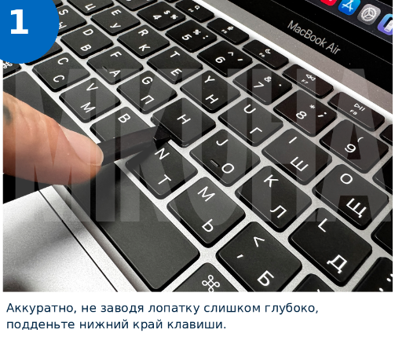

Замена клавиши ноутбука
8 простых шагов: снятие и установка клавиши.
Листайте инструкцию в удобном темпе.

Нажмите на изображение, чтобы увеличить
Если крепления отличаются от показанных на фото, не прикладывайте силу.
8 простых шагов: снятие и установка клавиши.
Листайте инструкцию в удобном темпе.
